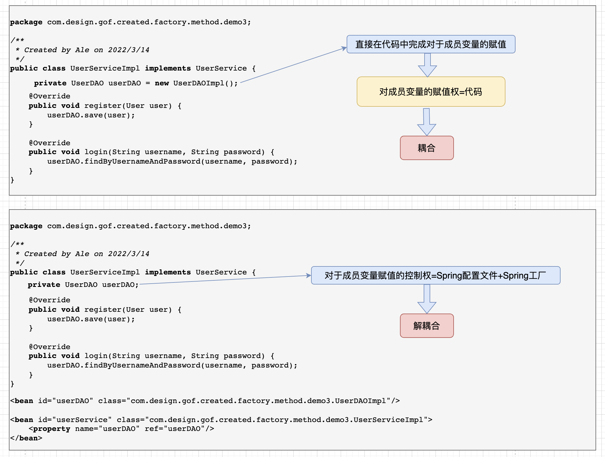
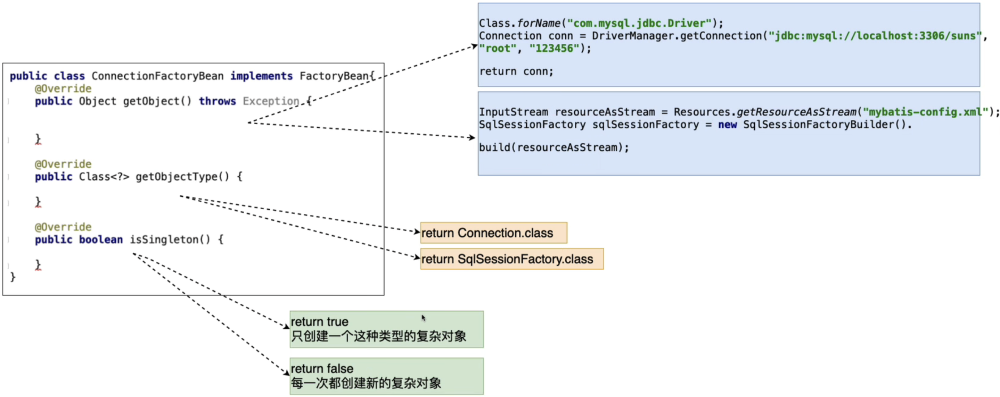
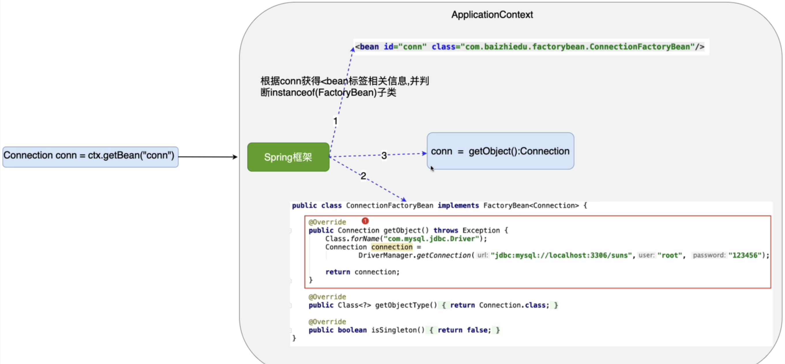
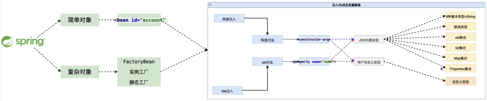

Spring控制反转(IOC)与依赖注入(DI)
1. 控制反转(IOC Inverse of Control)
控制：对于成员变量赋值的控制权
控制反转：把对于成员变量赋值的控制权，从代码中反转(转移)到Spring工厂和配置文件中完成
好处：解耦合，提高代码健壮性与可拓展性
底层实现：工厂设计模式
直观体现如下图

2. 依赖注入(Dependency Injection 简称DI)
1. 注入: 通过Spring的配置文件，为对象(bean,组件)的成员变量赋值
2. 依赖注入：当一个类需要另一个类时，就意味着依赖，一旦出现依赖，就可以把另一个类作为本类的成员变量，最终通过Springi配置文件进行注入（赋值）
3. 复杂对象的创建方式
3.1 方式一 FactoryBean接口

/**
* 1 实现FactoryBean接口
* Created by Ale on 2022/3/18
*/
public class ConnectionFactory implements FactoryBean<Connection> {
private String driverClassName;
private String url;
private String username;
private String password;
@Override
public Connection getObject() throws Exception {
Class.forName(driverClassName);
Connection connection = DriverManager.getConnection(url, username, password);
return connection;
}
@Override
public Class<?> getObjectType() {
return Connection.class;
}
@Override
public boolean isSingleton() {
return false;
}
public void setDriverClassName(String driverClassName) {
this.driverClassName = driverClassName;
}
public void setUrl(String url) {
this.url = url;
}
public void setUsername(String username) {
this.username = username;
}
public void setPassword(String password) {
this.password = password;
}
}
/**
* 2.配置对应bean信息
* 注意点：FactoryBean接口的实现类，所配置的bean其实是为了创建复杂对象而配置。
* 通过getBean("conn")其实获取的是它所创建的复杂对象Connection
* 如果想获取ConnectionFactory对象的话可通过context.getBean("&conn")("&")前缀可获得
*/
<bean id="conn" class="org.example.spring.factory.ConnectionFactory">
<property name="driverClassName" value="com.mysql.jdbc.Driver"/>
<property name="url" value="jdbc:mysql://localhost:3306/plo_admin?useSSL=false"/>
<property name="username" value="root"/>
<property name="password" value="root"/>
</bean>
3.2 FactoryBean原理(个人理解)
1. 内部流程
- 通过getBean()获得所配置的类的对象，进而通过instanceof判断是否是FactoryBean的实现类
按照接口规范获取getObject()所返回的对象
2. FactoryBean是Sping中用于创建复杂对象的一种方式，也是Spring原生提供的。

3.2 方式二 实例工厂
1. 避免Spring框架的侵入
2. 整合遗留性
3. 栗子
/**
* Created by Ale on 2022/3/19
*/
public class ConnFactory {
public Connection getConnection() {
Connection connection = null;
try {
Class.forName("com.mysql.jdbc.Driver");
connection = DriverManager.getConnection("jdbc:mysql://localhost:3306/plo_admin?useSSL=false", "root", "root");
} catch (ClassNotFoundException | SQLException e) {
e.printStackTrace();
}
return connection;
}
}
<bean id="connFactory" class="org.example.spring.factory.ConnFactory"/>
<bean id="conn" factory-bean="connFactory" factory-method="getConnection"/>
3.3 方式二 静态工厂
public class StaticConnectionFactory {
public static Connection getConnection() {
Connection connection = null;
try {
Class.forName("com.mysql.jdbc.Driver");
connection = DriverManager.getConnection("jdbc:mysql://localhost:3306/plo_admin?useSSL=false", "root", "root");
} catch (ClassNotFoundException | SQLException e) {
e.printStackTrace();
}
return connection;
}
}
<bean id="conn" class="org.example.spring.factory.StaticConnectionFactory" factory-method="getConnection"/>
4. Spring工厂创建对象总结
